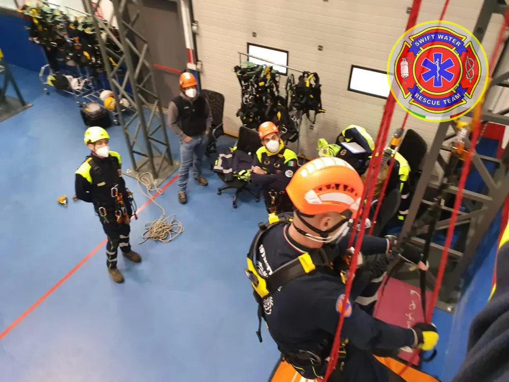
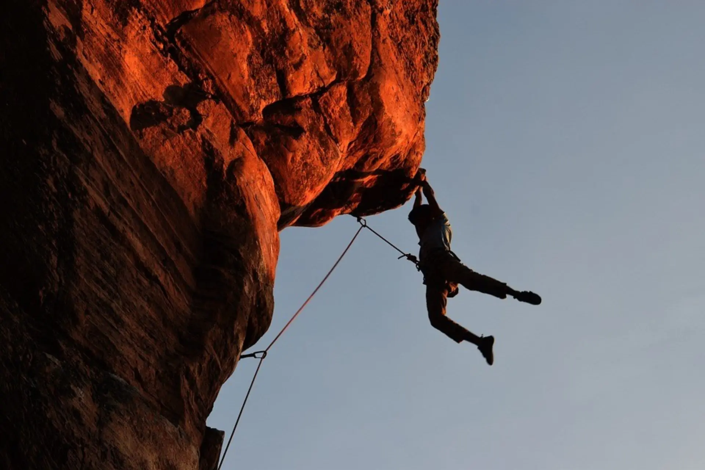
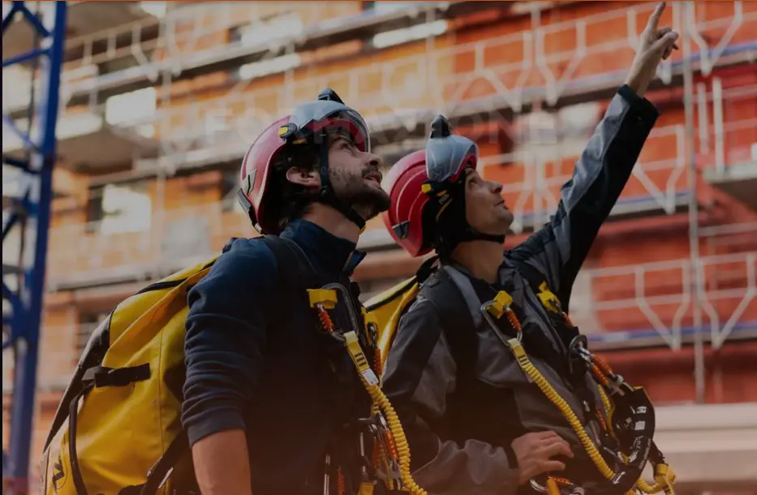
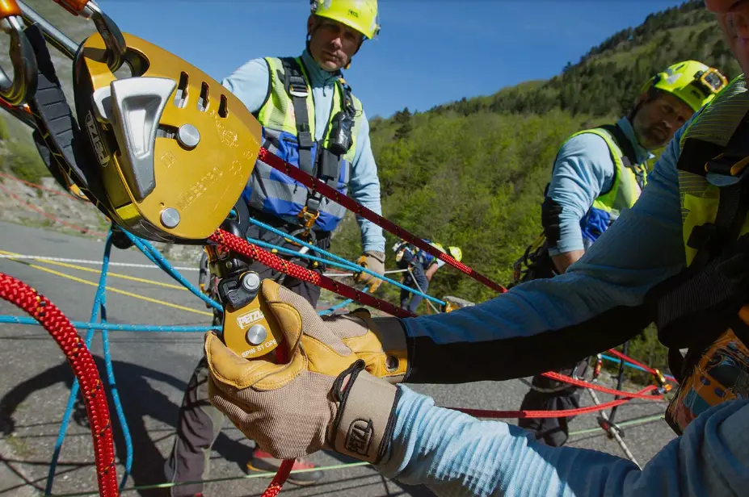

 Diego Maltenti
IRATA
Diego Maltenti
IRATA
IRATA Livello 1 – Accesso su Fune
Formazione base per lavoratori su fune: sicurezza, uso dei DPI, tecniche di risalita, discesa e soccorso di base. Valutazione con esaminatore IRATA accreditato.

 Franco Bignami
IRATA
Franco Bignami
IRATA
IRATA Livello 2 – Posizionamento su Fune
Tecniche avanzate di posizionamento e lavoro su superfici verticali. Richiede IRATA L1 valido. Prova pratica con esaminatore accreditato inclusa.

Diego Maltenti
IRATA
IRATA Livello 3 – Supervisore su Fune
Massimo livello IRATA: supervisione squadre in quota, pianificazione operativa e gestione del rischio. Richiede IRATA L2 valido e documentata esperienza.

Diego Maltenti
GWO
GWO Basic Safety Training (BST)
Formazione obbligatoria per l'eolico: pronto soccorso, antincendio, sicurezza manuale, lavoro in quota e sopravvivenza in mare. Riconosciuto a livello globale.
Diego Maltenti
Fune D.Lgs. 81/08
Addetto Sistemi di Accesso e Posizionamento
Corso D.Lgs. 81/08 per l'uso dei sistemi di accesso e posizionamento su fune. Teoria, pratica su strutture dedicate e attestato finale rilasciato.
Franco Bignami
Fune D.Lgs. 81/08
Addetto Sistemi di Salvataggio su Fune
Tecniche di soccorso e salvataggio per operatori su fune. Conformità D.Lgs. 81/08. Manovre di recupero, uso dei presidi e simulazioni pratiche incluse.
Diego Maltenti
Fune D.Lgs. 81/08
Aggiornamento Addetto Sistemi su Fune
Aggiornamento periodico obbligatorio per addetti su fune già certificati. Revisione normativa, verifica competenze e prove pratiche incluse.
Franco Bignami
Lavori in Quota
Addetto Lavori in Quota – D.Lgs. 81/08
Formazione per lavoratori esposti al rischio di caduta dall'alto: scale, ponteggi, piattaforme elevabili e dispositivi anticaduta. Attestato riconosciuto.
 Giuseppe Barucco
PTI
Giuseppe Barucco
PTI
PTI Livello 1 – Lavori su Fune
Corso di accesso base secondo lo standard PTI Italia. Teoria, pratica su strutture, uso DPI anticaduta e valutazione finale con istruttore PTI certificato.
 Michele Perotti
PTI
Michele Perotti
PTI
PTI Livello 2 – Posizionamento su Fune
Avanzamento PTI: tecniche di posizionamento, lavoro in quota su strutture complesse e gestione autonoma delle manovre. Richiede PTI L1 valido.
Diego Maltenti
Soccorso
Tecniche di Soccorso su Fune
Pianificazione e gestione dell'emergenza in quota: recupero del lavoratore infortunato, coordinamento con i soccorsi e uso dei presidi di emergenza.
Franco Bignami
Accreditato
DPI III Categoria – Anticaduta (Accreditato)
Corso accreditato per l'uso dei DPI di III categoria anticaduta. Normativa EN 361, ispezione, uso corretto e simulazioni pratiche. Attestato accreditato rilasciato.